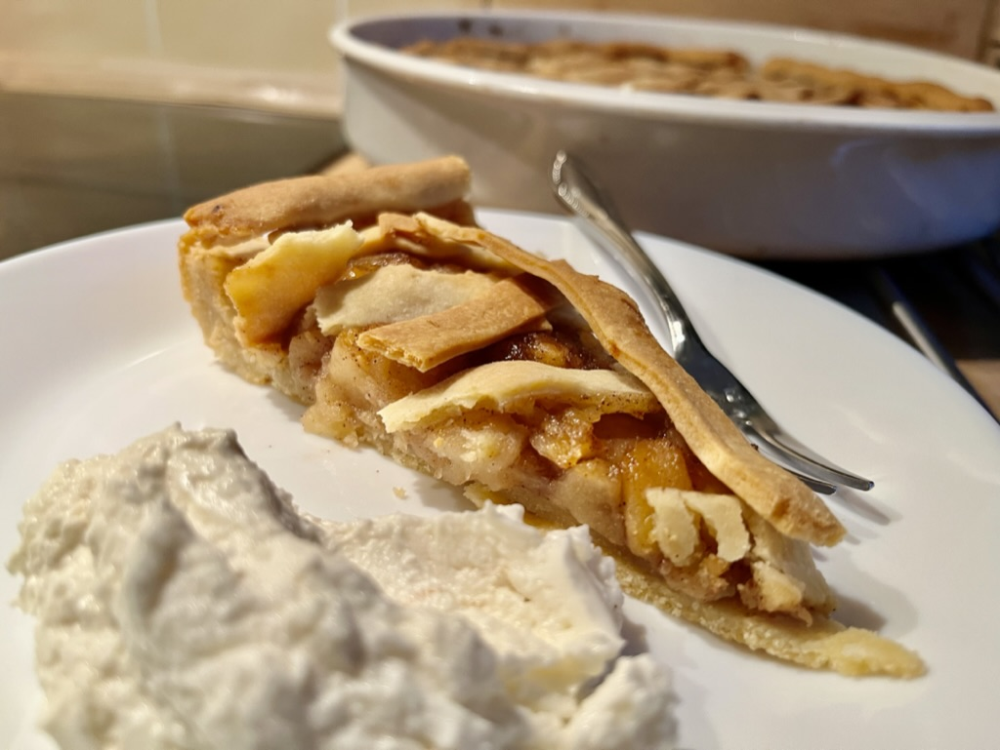

Jablečný Koláč★ Apple Pie
 16 porcí
16 porcí 45 minut
45 minut Sladké
Sladké

400 ghladké mouky12g / 1 sáčekprášek do pečiva125 gcukr moučka1 špetkasoli200 gmáslo (změklé, né rozpuštěné)2-3 ksstřednich vajec (žloutky)
Smíchej hladkou mouku, prášek do pečiva, cukr, špetku soli, máslo, vajíčka (žloutky) v míse.
Míchej ingredience dokud nevytvoří homogenní hmotu a malá kulička při zmáčknutí mírně praská po okrajích (příliš suché → přidat máslo, příliš vlhké → přidat mouku)
Trouba 180 °C na 45 minut
7 ksstředních jablek2 lžícemoučkového cukru